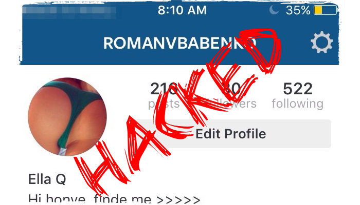
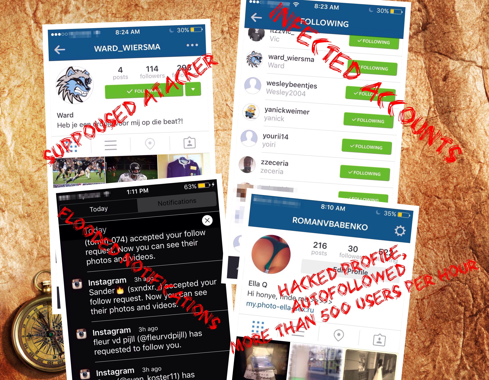
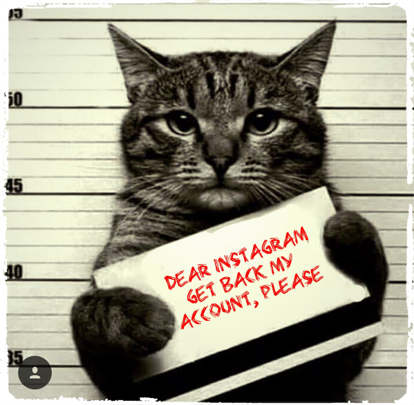

I have been a user of Instagram for years, but the last Sunday(Mar 27, 2016) my private account was violently hacked. Attackers changed my personal info and started the following storm. Despite I was controlling the account, it sent by itself more than 600 following requests to the same probably infected private accounts in several hours.
Changing password and revocation of all third party apps did not help. The process provided. I informed Instagram with tweet and feedback form, but no reaction was followed. I decided temporary disable the account. According to the manual temporarily disabled accounts reactivate when a user signs in next time, but it did not happen. I simply lost access to the account. Support recovered access to the account, but no reaction was received on the bug report. So I got ruined account with more than 500 following users which were gained along the storm and lots of mess in my feed.

Googling showed that it was not a new issue, rather “known flaw”.
- Oct 9, 2015 | Инструкция: Instagram сам подписывается на других, что делать!?
- Sep 30, 2015 | Why am I automatically following people on Instagram who I never chose to follow?
UPDATE: the day after my account was recovered by Instagram support team and transferred to Flickr by me it was deactivated again. Support did not respond me and I have no idea what happened to my stuff.
UPDATE #2: Service Team wanted photo of my face with white paper which includes username and checking code they’d sent me. Feel myself like him:
UPDATE #3 Despite I’ve sent three non-filtered originals photo from my account, support team rejected claims of mine, so the account has lost. The end.

Other controversial things
- Copyright. Instagram keep the right to sell your photo without your required agreement(probably the rules have changed since 2012, but it’s not the main point).
- Security. Does not have two-step auth and login observing and notification mechanism. Manual of Instagram security policy includes 5 points which can be expressed as the only one: “keep your password in safety on your own”
- The mobile app is pure: you cannot zoom any media or turn it into landscape mode.
- Media movies download is programmatically obfuscated, you simply cannot store your media on disk from browser, “Save Image As…” is absent.
- Third-party apps creation come not so easy as before. Every new app is in Sandbox mode, so it has no access to real data. To be more exact it has the access, but only for the limited range of them. For instance, if you wanna create your own private app which backs up your account, you must pass procedure of approving. https://goo.gl/JkJh31
What am I going to do?
Despite my experience creation of third-party backup is not an option as I mentioned before. But fortunately, there are a couple of services which are very helpful.
- http://instaport.me/ - only stores your data on disk(movies will be stored as pictures)
- http://flickstagram.org/ - imports your data into Fliсkr account(movies are being imported as pictures)
Both approaches are very well documented here http://www.shoutmeloud.com/how-to-import-all-instagram-photos-to-flickr.html
So I’m happy a user of Flickr now
Conclusions
First of all I don’t blame any one. It’s a free service and it may do what it reckons is right. But I feel uncomfortable in all these circumstances, so I feel free to leave.
The attackers only changed my personal info and organised mass following. Due to the fact and the similar issue described in the Internet, I think the issue is restricted by the only signs. But the fact the account was not stolen at all, tells us that credentials were not gotten by attackers.
The bad news is the issue is here, the good news is you have alternatives and free will to choose.
References
- What Instagram’s New Terms of Service Mean for You | http://bits.blogs.nytimes.com/2012/12/17/what-instagrams-new-terms-of-service-mean-for-you
- Instagram Security Tips | https://help.instagram.com/369001149843369
- http://flickstagram.org/
- http://instaport.me/
- http://www.shoutmeloud.com/how-to-import-all-instagram-photos-to-flickr.html
- http://lifehacker.com/5899690/dont-bother-with-instagram-here-are-five-better-alternatives-for-android